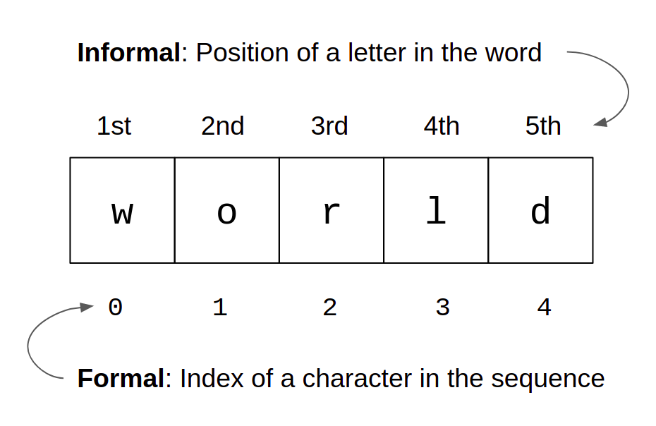
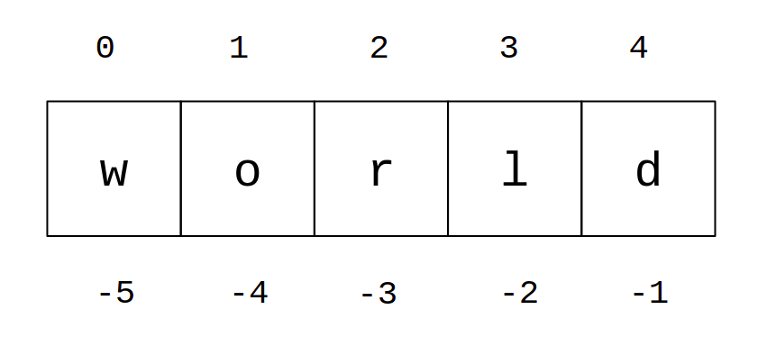
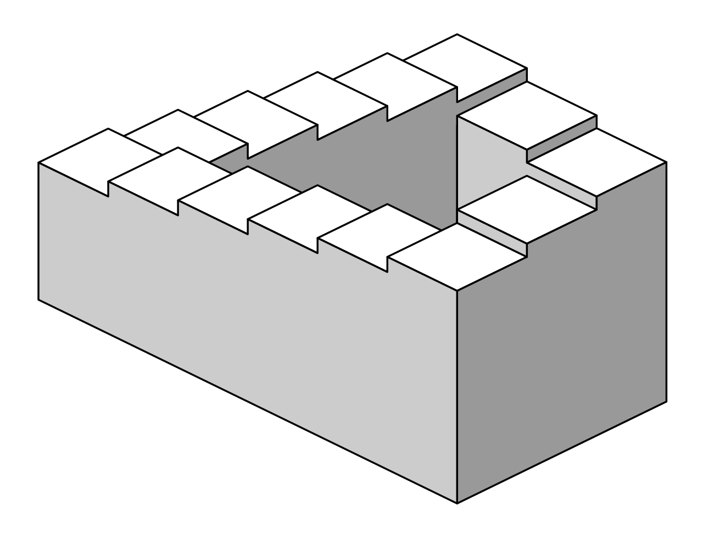
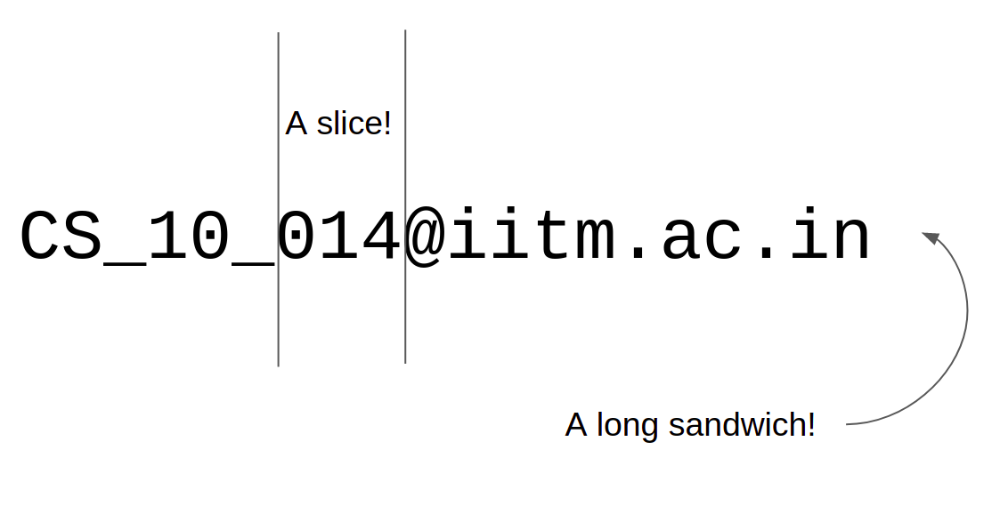
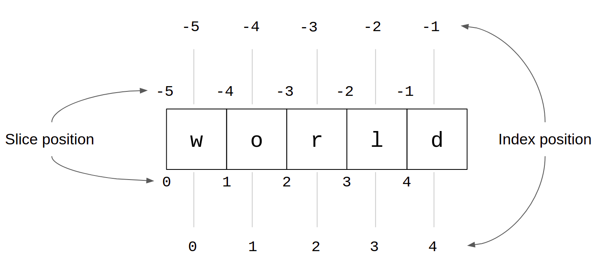
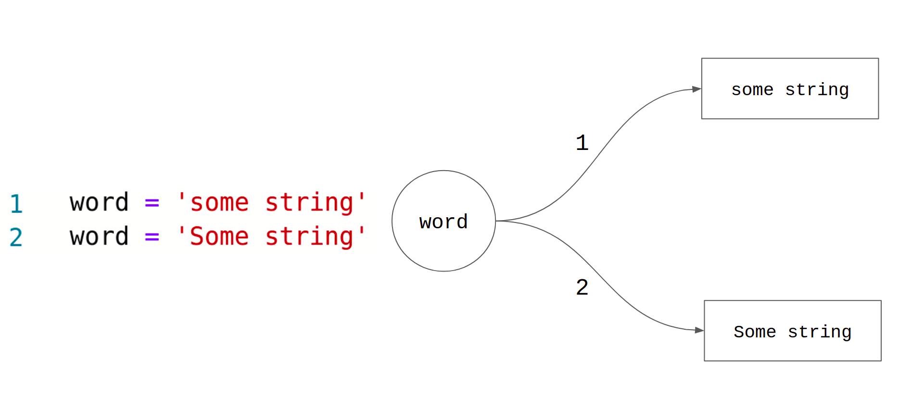

Lesson-1.6
Strings
We looked at string operations in the previous lesson. A quick recap of what we have seen so far:
- Length of a string using the
lenfunction - Concatenation of two strings using the
+operator - Replication of strings using the
*operator - String comparison using relational operators such as
>, <, == - Use of
inkeyword
In this lesson, we will explore the sequential nature of strings. This will also serve as an introduction to lists in Python. In addition, we will also look at string methods.
Indexing
A string is a sequence of characters. Sequences support indexing. What do we mean by that? Consider the following image:

Given a word such as “world”, we say that ‘w’ is the first letter in the word, ‘o’ is the second letter and so on. What we are referring to is the position of the letter in the word. The “index” is just a formal way of denoting the position of an element in the sequence. In computer science, starting the index from 0 is a widespread convention. This is called zero-based numbering.
Once this is defined, we can go ahead and access characters that are at a given position in a string:
This will give the output:
w
o
r
l
dGiven a variable, say word, that holds a string literal, word[i] gives the character at index i in the string. Informally, this would be the letter at position i + 1 in the string. Now, let us turn to the following code:
This gives the following output:
Traceback (most recent call last):
File "main.py", line 2, in <module>
print(word[5])
IndexError: string index out of rangeThe interpreter throws an IndexError as we are trying to access an index that is out of range. The length of the string is 5. Since we start the index from 0, the last character will be at index 4. Anything greater than that is going to throw an error. Now, let us turn to the other end of the spectrum:
Surprisingly, there is no error and the output is:
dPython supports negative indexing. This can be best understood using the following image:

Think about it as follows. You keep moving down a flight of stairs starting from the top most step. When you reach the last step, you think that you cannot go down any further. At that moment, some invisible hand magically transports you back to the top most step and you begin your descent all over again. A good image that captures this analogy is the Penrose stairs:

Image credit: Wikipedia
{kind=link}
An index of -1 points to the last element in the sequence. From this, we keep moving backwards until we reach the first element in the sequence which is at index -5.
Unlike the Penrose stairs, we cannot keep repeating this forever. print(word[-6]) will throw an IndexError.
Slicing
Slicing is a way of extracting a substring from a string using the slice() function.
Assume that you have a collection of email ids of students in IIT-M. Let us say all email ids are of this form:
branch_year_number@iitm.ac.in
Each branch is given a two-letter code. For example, CS stands for Computer Science and ME stands for Mechanical Engineering. The year is some two digit number that represents the year of joining. For example, it would be 11 if the year of joining is 2011. Finally, number is a three digit roll number. Some sample email ids are as follows:
CS_10_014@iitm.ac.in
ME_11_123@iitm.ac.in
BT_17_001@iitm.ac.inGiven a string, we would like to extract the roll number of the student from it. How do we do this? Python provides a way to extract this information using the concept of slicing:

The slicing operator - start:stop - will be our knife in slicing sequences! Let us see how it works. The substring that we want to extract is 014. In terms of indices, this will be 6, 7, 8 in the string email. So, we start slicing at the index 6 and stop before the index 9. In general, email[start : stop] will be the substring starting at index start and stopping before the index stop, i.e., the character at the index stop will be excluded from the substring.
Few more examples using the same string:
email = 'CS_10_014@iitm.ac.in'
branch = email[0 : 2]
year = email[3 : 5]
roll = email[6 : 9]
college = email[10 : 14]
# Print each one of them and check the outputSlicing is quite powerful. If we want the institute roll number, including the branch, we could do the following:
This outputs CS_10_014. If no starting index is specified in the slice, then start will default to 0. Likewise, if no stopping index is specified, stop will default to the end of the string or len(email). Now, consider:
This outputs iitm.ac.in. Think for a while about the output. It is just a combination of negative indexing and slicing. Use the following visual to get a better understanding of slicing:

Using the above visual, we can now very easily process the following slices:
Immutability
Execute the following code and observe the output:
The interpreter throws a TypeError with the following error message: 'str' object does not support item assignment. We say that something is “mutable” if it can be changed, modified. Therefore, an object is immutable if it cannot be changed or modified. Strings are immutable. One or more characters in the string literal present in word cannot be modified in-place.
Note that this is different from the following:
Here, we are not modifying the variable word in-place. Instead, we are assigning it an entirely new string literal in line-2. Thus there are two different string literals - 'some string' and 'Some string' - and the former has NOT been transformed into the latter.

The number on the arrow represents the line number in the code. word binds to the string on top after line-1. word binds to the string on the bottom after line-2. Note that there are two different strings here; one doesn’t transform into the other. The concept of mutable and immutable objects will be explored in considerable detail in chapter-5.
Methods
Consider the following problem:
!!! question ” ” Accept a sentence as input from the user and output the same sentence with the first letter in the sentence capitalized.
For example, if the input is 'this is a chair.', the output should be 'This is a chair.'.
Solution
capitalize is called a method. Methods are essentially functions, but they are defined for specific objects. So, they have to be called by using the object for which they have been defined. In the case of capitalize, it is a method that is defined for the str data type. If we try to call it using an int object, we will get an error:
Getting back to the previous code snippet, sentence.capitalize() returns a string, which is then assigned to a new variable called cap_sentence. There are plenty of other methods associated with strings. Let us look at one more method which features in the solution to this interesting problem:
!!! question ” ” Check whether a given string is a valid name of a person.
It is safe to assume that we are not thinking about Elon Musk’s son, in which case, a name usually has only alphabets without any special characters and numbers. The method isalpha checks for just this requirement:
name.isalpha() returns a boolean value. If every character in the string is an alphabet and the string is non-empty, it returns True, and False otherwise. A comprehensive list of string methods can be found here.